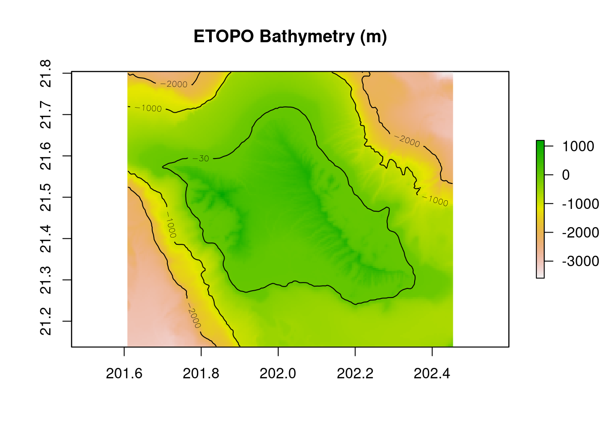
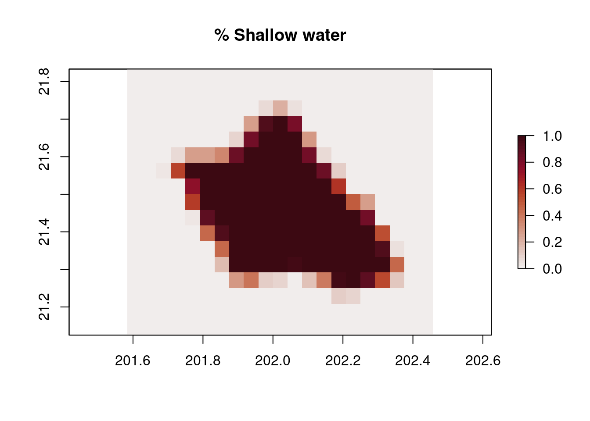
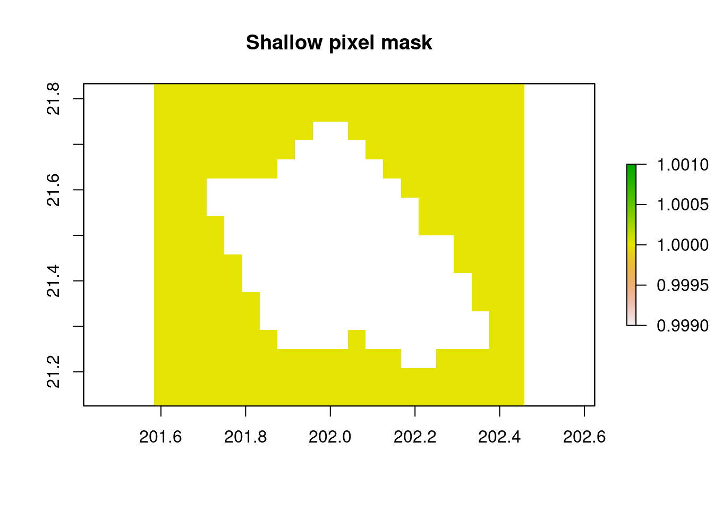
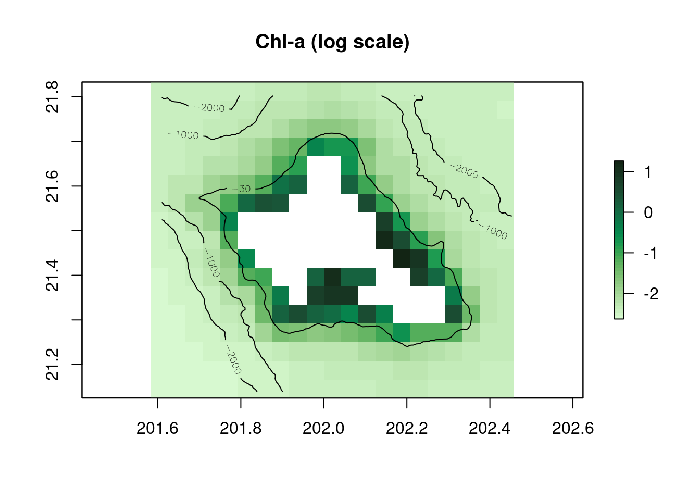

# Load libraries
library(rerddap)
library(raster)
library(sp)
library(cmocean)
library(here)
library(ncdf4)Mask shallow pixels for satellite ocean color datasets
Updated March 2024
Remotely sensed ocean color algorithms are calibrated for optically-deep waters, where the signal received by the satellite sensor originates from the water column without any bottom contribution.
Optically shallow waters are those in which light reflected off the seafloor contributes significantly to the water-leaving signal, such as coral reefs, atolls, lagoons. This is known to affect geophysical variables derived by ocean-color algorithms, often leading to biased values in chlorophyll-a concentration for example.
In the tropical Pacific, optically-deep waters are typically deeper than 15 – 30 m. It is recommended to remove shallow-pixels, i.e., ocean color pixels that contain a portion (e.g., more than 5%) of shallow water area (less than 30m depth), from the study area before computing ocean color metrics (Couch et al., 2023).
Objective
In this tutorial, we demonstrate how to create a mask to remove ocean color pixels in the coastal shallow water that are contaminated by bottom reflectance.
The tutorial demonstrates the following techniques
- Accessing and Downloading satellite data from ERDDAP data server
- Visualizing the datasets
- Matching coarse-resolution ocean color data with fine-resolution bathymetry data
- Calculating percentage of shallow water area in each ocean color pixel
- Creating and applying value mask to datasets
- Calculating long-term climatology from monthly data
- Outputing dataset into netCDF format
Datasets used
Bathymetry data, ETOPO Global Relief Model integrates topography, bathymetry, and shoreline data, version 2022, 15 arc-second resolution
Ocean color data, ESA CCI chlorophyll-a concentration, 1998-2022, monthly
References
Couch CS, Oliver TA, Dettloff K, Huntington B, Tanaka KR and Vargas-Ángel B (2023) Ecological and environmental predictors of juvenile coral density across the central and western Pacific. Front. Mar. Sci. 10:1192102. doi: 10.3389/fmars.2023.1192102
Load libraries
Set work directory
# This is where the data are and where the plots will go
Dir <- here()Access and Download satellite data
We will access the ETOPO2022 bathymetry data and the monthly ESA CCI chlorophyll-a concentration data (1/1998-12/2022) for the island of Oahu from the OceanWatch ERDDAP server. We will also download the chlorophyll-a data and save it to local for future use.
The data can be downloaded by sending a data request to the ERDDAP server via URL. The data request URL includes the dataset ID of interest and other query conditions if subset of the data product is of interest.
To learn more about how to set up ERDDAP URL data requests, please go to the ERDDAP module page.
We will utilize the ’‘’rerddap’’’ R package to engage with the ERDDAP data server. The ’‘’rerddap’’’ package, created by Roy Mendelssohn (SWFSC) and Scott Chamberlain, is designed to simplify the process of importing data into R.
# Bounding box for Oahu:
lon_range = c(-158.39+360, -157.55+360)
lat_range = c(21.14, 21.8)
# Set ERDDAP URL
ERDDAP_Node = "https://oceanwatch.pifsc.noaa.gov/erddap/"
# Download bathymetry data with its unique ID
ETOPO_id = 'ETOPO_2022_v1_15s'
ETOPO_info=info(datasetid = ETOPO_id,url = ERDDAP_Node)
bathy = griddap(url = ERDDAP_Node, ETOPO_id,
latitude = lat_range, longitude = lon_range)
# Download ocean color data with its unique ID
CCI_id = 'esa-cci-chla-monthly-v6-0'
CCI_info=info(datasetid = CCI_id,url = ERDDAP_Node)
var=CCI_info$variable$variable_name
chl = griddap(url = ERDDAP_Node, CCI_id,
time = c('1998-01-01', '2022-12-01'),
latitude = lat_range, longitude = lon_range,
fields = var[1],
store=disk('chl_data'))Visualize bathymetry and chlorophyll-a data
We convert bathymetry and chlorophyll-a data to rasters for visulization.
# Convert the data into a raster layer
r_bathy=raster(bathy$summary$filename)
plot(r_bathy,main="ETOPO Bathymetry (m)")
contour(r_bathy,levels=c(-30,-1000,-2000),add=TRUE) 
# Convert the data into a raster layer
r_chl=raster(chl$summary$filename,varname=var[1])
plot(log(r_chl),main="ESA CCI Chl-a (log scale)",col=cmocean('algae')(50))
contour(r_bathy,levels=c(-30,-1000,-2000),add=TRUE) Match two datasets and calculate percentage of shallow water area in each ocean color pixel
The ocean color data has coarser resolution (~4km) compared with the bathymetry data (~500m). We will calculate how much area (percentage) within each ocean color pixel is in shallow water (<30m depth).
#Convert raster bathymetry to SpatialPoints dataframe for counting
df_bathy = data.frame(rasterToPoints(r_bathy))
coordinates(df_bathy) <- ~x+y
crs(df_bathy) = crs(r_chl[[1]])
# Define a function to calculate the percentage of (smaller) bathymetry pixels in each (larger) Chl-a pixel that are shallow
percent_shallow_pixels=function(depths,threshold=-30, na.rm=F){
return(length(which(depths>threshold))/length(depths))
}
# Build a raster of the chl-a grid, using the function to generate the shallow water area percentage to consider a pixel necessary to mask
per_shallow = rasterize(x = df_bathy,y=r_chl,fun=percent_shallow_pixels)[[2]]
plot(per_shallow,main="% Shallow water", col=cmocean('amp')(50))
Create a mask for shallow pixels
# Set a percentage threshold to create the shallow pixel mask
percent_threshold = 0.05
depth_mask = r_chl/r_chl
depth_mask[,]= 1
depth_mask[per_shallow>= percent_threshold]= NA
plot(depth_mask,main="Shallow pixel mask")
Calculate long-term climatology and compare unmasked and masked maps
# Read in the files previousely downloaded
files = list.files('chl_data', full.names = T)
# Read the file into R and make it to rasterstack
stack_chl = stack(files)
# Convert raster data to dataframe for calculating climatology
df_chl = as.data.frame(rasterToPoints(stack_chl))
df_chl$z = rowMeans(df_chl[,3:dim(df_chl)[2]], na.rm = T)
# Convert dataframe to raster for mapping
r_chl_clim = rasterFromXYZ(df_chl[,c("x", "y", "z")])
# Map unmasked climatology
plot(log(r_chl_clim),main="Chl-a (log scale)",col=cmocean('algae')(50))
contour(r_bathy,levels=c(-30,-1000,-2000),add=TRUE) 
# Apply Mask, calculate climatology and map
r_chl_masked = mask(x = stack_chl, mask = depth_mask)
# Convert masked raster data to dataframe for calculating climatology
df_chl_masked = as.data.frame(rasterToPoints(r_chl_masked))
df_chl_masked$z = rowMeans(df_chl_masked[,3:dim(df_chl_masked)[2]], na.rm = T)
# Convert dataframe to raster for mapping
r_chl_masked_clim = rasterFromXYZ(df_chl_masked[,c("x", "y", "z")])
# Map masked climatology
plot(log(r_chl_masked_clim),main="Masked Chl-a (log scale)",col=cmocean('algae')(50))
contour(r_bathy,levels=c(-30,-1000,-2000),add=TRUE) Output masked chlorophyll-a data to a netCDF file
# Grab var name and unit from unmasked nc file
nc = nc_open(paste0(files[1]))
variable_name = as.character(nc$var[[1]][2])
variable_unit = as.character(nc$var[[1]][8])
x_name = nc$dim$longitude$name
y_name = nc$dim$latitude$name
z_name = nc$dim$time$name
z_unit = nc$dim$time$units
nc_close(nc)
# Set a file name and output path for the masked data
masked_fln = 'esa_cci_monthly_chl-a_masked.nc'
mask_path = paste0(Dir, "/output/")
if (!dir.exists(mask_path)) {
dir.create(mask_path)
}
# Write out masked nc.file
writeRaster(r_chl_masked,
paste0(mask_path, masked_fln),
overwrite = T,
varname = variable_name,
varunit = variable_unit,
xname = x_name,
yname = y_name,
zname = z_name,
zunit = z_unit)Acknowledgements
Special thanks to Kisei Tanaka from NOAA’s Pacific Islands Fisheries Science Center (PIFSC) for his contributions to this tutorial, which is adapted from the scripts he developed. Additionally, portions of this tutorial have been revised based on a previous version created by Melanie Abecassis and Thomas Oliver.